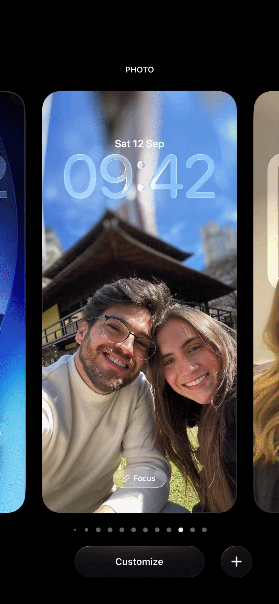

Native mobile software engineering and leadership across secure banking, global creative tools, and high-scale grocery flows.
Native Mobile Engineer with 9+ years of iOS experience and hands-on responsibility across iOS and Android, combining software engineering and technical leadership in product-critical mobile apps. I currently own mobile technical direction and end-to-end delivery for a digital banking product, from discovery, requirements, architecture, implementation, security, testing, observability, CI/CD, and release to the App Store and Google Play.
Portfolio highlight
Trio banking app
Leading native iOS and Android delivery for a business banking product: architecture from the ground up, secure authentication, biometrics, widgets, push notifications, observability, release processes, and mobile/backend contracts.
Lead MobileiOS & AndroidSecurityCI/CD + Releases
About
I build mobile products where architecture, product quality, and release execution all matter.
My strongest work sits between technical direction and hands-on implementation. I turn ambiguous mobile demands into secure, shippable native apps by aligning product, design, backend, leadership, quality, observability, and release execution.
9+ years iOSNative iOS & AndroidUber · FlipaClip · TrioFintech · AI · Global products
Portfolio
Selected product work
Work that connects product ownership with architecture, quality, security, and release execution.
Banking app · Lead Mobile
Trio: secure app foundations
Technical direction and hands-on implementation for a native business banking product, aligning iOS and Android around architecture, security standards, API contracts, observability, testing, and release readiness.
Native iOS app built from scratch with production readiness and App Store release ownership.
Authentication, TOTP, biometrics, certificate pinning, OWASP principles, and secure mobile flows.
APNs/FCM notifications, silent pushes, Home Screen and Lock Screen widgets, Sentry, Crashlytics, and Amplitude.
Demo mode is available to explore the full app experience and assess the quality of the shipped product, including the TOTP flow: demo.mode.otp@trio.com.br, any password such as 123456, and code 123456.
Widget dataDifferent data contexts across QA and beta widgets.

Grocery app · Large-scale mobile
Uber: shopper flow redesigns
Cross-team engineering on grocery surfaces at global scale, where UI behavior, list performance, item logic, architecture, and migration from legacy code all mattered.
Smart Picker built with the data team to support more efficient item selection based on user preferences.
Login redesign with modularized flow, SOLID principles, unit tests, screenshot tests, and Instruments validation.
Picking flow redesign with new scenes and updated business logic for grocery operations.
Highly visual iOS work for a global creative app, combining pixel-perfect UIKit/SwiftUI, AI features, monetization SDKs, analytics, subscriptions, ads, segmentation, and lifecycle messaging.
Color Picker, Segment Anything / Magic Cut, Text-to-Speech, Voice Cloning, and user data collection work.
MoEngage, Amplitude, Purchasely, subscriptions, ads, paywalls, user segmentation, and lifecycle messaging.
Lead the development and launch of native iOS and Android, keeping both platforms aligned on architecture, API contracts, business rules, security, testing, observability, and release processes.
Built the entire iOS app from scratch and remain hands-on across architecture, feature implementation, production readiness, security, and App Store releases.
Work on-site with CEO and CTO, align weekly with Product, Design, Backend, and Internet Banking leaders, and turn new mobile demands into executable delivery plans.
Demo mode is available to explore the full app experience and assess the quality of the shipped product, including the TOTP flow: use demo.mode.otp@trio.com.br, any password such as 123456, and code 123456 when prompted.
Collaborated directly with the CEO and cross-functional teams on a global creative product reaching over 5.1M monthly users.
Implemented and maintained monetization, analytics, and engagement SDKs including MoEngage, Amplitude, and Purchasely, supporting subscriptions, ads, paywalls, segmentation, and lifecycle messaging.
Developed features such as Color Picker, Segment Anything / Magic Cut, Text-to-Speech, Voice Cloning, and user data collection surfaces.
Contributed to maintenance and cross-team development on grocery projects serving 171M+ daily users worldwide.
Worked on Smart Picker, Login Redesign, and Picking Flow Redesign, focusing on UI responsiveness, view reuse states, animations, architecture, and business logic.
Validated performance with Instruments templates and code quality through XCTest and screenshot tests.
Developed digital banking features for Banco Original and BTG Pactual, including loan capital flow and cryptocurrency purchase flow.
Led feature implementation within Scrum teams, mentored junior developers through pair programming, and improved quality with XCTest and screenshot tests.
PlayPet
Junior iOS Engineer
Nov 2017 - Jan 2020
Integrated embedded IoT systems such as balance sensors and cameras into the app.
Modularized the app, migrated networking from AWS to Firebase, developed MVPs for validation, and released new versions to the App Store.
Contributed to FlipaClip initiatives that supported subscriptions, ads, paywalls, segmentation, and lifecycle messaging during a +154% revenue increase over two years.
Worked on Uber grocery projects serving 171M+ daily users worldwide.
Currently own mobile technical direction and release lifecycle for native iOS and Android banking apps.
Open to
Software Engineer, Senior iOS, and Mobile Leadership roles · fintech/security-sensitive products · AI-enabled mobile apps · remote or hybrid teams